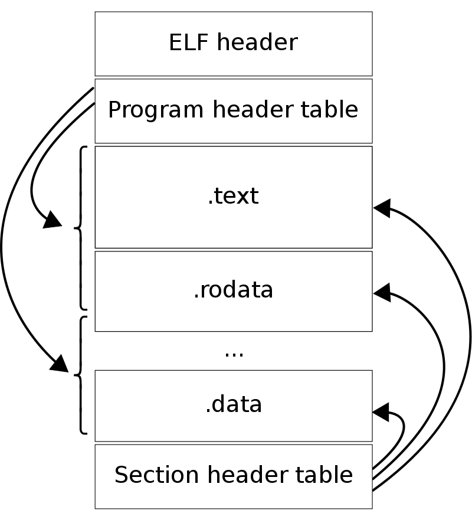
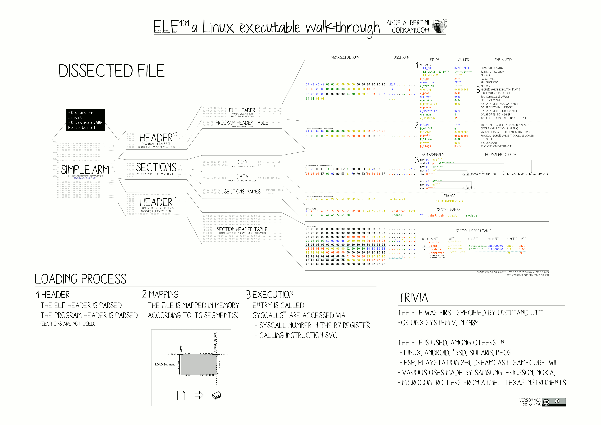

ELF(Executable and Linking Format) 是linux系统下可执行文件，目标文件，共享链接库和内核转储文件的格式。维基百科中是这样描述的：
在计算机科学中，ELF文件是一种用于可执行文件、目标文件、共享库和核心转储（core dump）的标准文件格式。其中核心转储是指： 操作系统在进程收到某些信号而终止时，将此时进程地址空间的内容以及有关进程状态的其他信息写出的一个磁盘文件。这种信息往往用于调试。
可重定位文件（relocatable file） 它保存了一些可以和其他目标文件链接并生成可执行文件或者共享库的二进制代码和数据；可执行文件（excutable file） 它保存了适合直接加载到内存中执行的二进制程序；共享库文件（shared object file 一种特殊的可重定位目标文件，可以在加载或者运行时被动态的加载进内存并链接。核心转储文件（core dump） 是操作系统在进程收到某些信号而终止运行时，将此时进程地址空间的内容以及有关进程状态的其他信息写入一个磁盘文件。这种信息往往用于调试。
ELF文件主要由四部分组成：
-
ELF Header：主要包括文件的类型，架构，程序入口地址，Program Header 和 Section Header 的大小，数量，偏移量等；
-
Programe Header：列举所有有效的 segments 的属性，描述如何创建进程运行时内存镜像，当内核看到这些 segments 时，使用 mmap 将他们映射到虚拟地址空间，为程序的运行准备；
-
Section：在ELF文件中，数据和代码分开存放的，这样可以按照其功能属性分成一些区域，比如程序、数据、符号表等。这些分离存放的区域在ELF文件中反映成section；
-
Section Header：定义ELF文件中所有的 section，用于链接和重定位。对于可执行文件，有四个主要部分：.text、.data、.rodata 和 .bss；
ELF 文件各个部分的布局如下：

这里有一个ARM上二进制文件的详细示例，可以参考下图：

在C语言中，ELF Header 定义为如下的结构体：
1
2
3
4
5
6
7
8
9
10
11
12
13
14
15
16
17
18
19
20
21
22
23
24
25
26
27
28
29
30
31
32
33
34
35
| #define EI_NIDENT 16
typedef struct {
unsigned char e_ident[EI_NIDENT];
Elf32_Half e_type;
Elf32_Half e_machine;
Elf32_Word e_version;
Elf32_Addr e_entry;
Elf32_Off e_phoff;
Elf32_Off e_shoff;
Elf32_Word e_flags;
Elf32_Half e_ehsize;
Elf32_Half e_phentsize;
Elf32_Half e_phnum;
Elf32_Half e_shentsize;
Elf32_Half e_shnum;
Elf32_Half e_shstrndx;
} Elf32_Ehdr;
typedef struct {
unsigned char e_ident[EI_NIDENT];
Elf64_Half e_type;
Elf64_Half e_machine;
Elf64_Word e_version;
Elf64_Addr e_entry;
Elf64_Off e_phoff;
Elf64_Off e_shoff;
Elf64_Word e_flags;
Elf64_Half e_ehsize;
Elf64_Half e_phentsize;
Elf64_Half e_phnum;
Elf64_Half e_shentsize;
Elf64_Half e_shnum;
Elf64_Half e_shstrndx;
} Elf64_Ehdr;
|
其中:
ElfN_Addr Unsigned program address, uintN_t
ElfN_Off Unsigned file offset, uintN_t
上述结构体中各个字段的含义如下所示：
e_ident： 包含一个 magic number、ABI信息，该文件使用的平台、大小端规则e_type： 文件类型, 表示该文件属于可执行文件、可重定位文件、core dump文件或者共享库e_machine：机器类型e_version：通常都是1e_entry： 表示程序执行的入口地址e_phoff： 表示Program Header的入口偏移量（以字节为单位）e_shoff： 表示Section Header的入口偏移量（以字节为单位）e_flags： 保存了这个ELF文件相关的特定处理器的flage_ehsize： 表示ELF Header大小（以字节为单位）e_phentsize： 表示Program Header大小（以字节为单位）e_phnum： 表示Program Header的数量 （十进制数字）e_shentsize： 表示Section Header大小（以字节为单位）e_shnum： 表示Section Header的数量 （十进制数字）e_shstrndx： 表示字符串表的索引，字符串表用来保存ELF文件中的字符串，比如段名、变量名。 然后通过字符串在表中的偏移访问字符串。
Section
在ELF文件中，数据和代码分开存放的，这样可以按照其功能属性分成一些区域，比如程序、数据、符号表等。这些分离存放的区域在ELF文件中反映成section。ELF文件中典型的section如下：
.text: 已编译程序的二进制代码.rodata: 只读数据段，比如常量.data: 已初始化的全局变量和静态变量.bss: 未初始化的全局变量和静态变量，所有被初始化成0的全局变量和静态变量.sysmtab: 符号表，它存放了程序中定义和引用的函数和全局变量的信息.debug: 调试符号表，它需要以’-g’选项编译才能得到，里面保存了程序中定义的局部变量和类型定义，程序中定义和引用的全局变量，以及原始的C文件.line: 原始的C文件行号和.text节中机器指令之间的映射.strtab: 字符串表，内容包括 .symtab 和 .debug 节中的符号表
其他特殊的 section：
1）对于可重定位的文件，由于在编译时，并不能确定它引用的外部函数和变量的地址信息，因此，编译器在生成目标文件时，增加了两个·section·：
.rel.text 保存了程序中引用的外部函数的重定位信息，这些信息用于在链接时重定位其对应的符号。.rel.data 保存了被模块引用或定义的所有全局变量的重定位信息，这些信息用于在链接时重定位其对应的全局变量。
2）对于可执行文件，由于它已经全部完成了重定位工作，可以直接加载到内存中执行，所以它不存在.rel.text和.rel.data这两个section。但是，它增加了一个section：
.init： 这个section里面保存了程序运行前的初始化代码
上述描述的各个文件中包含的这些section是必须存在的，当然除了这些section，每种文件还有一些其他的section用来存放编译器或者链接器所需要的辅助信息。
上述各个section的大小和位置等具体信息的存放是由Section Header Table来描述的。Section Header Table是一个结构体数组，对应的结构体定义如下：
1
2
3
4
5
6
7
8
9
10
11
12
| typedef struct {
uint32_t sh_name;
uint32_t sh_type;
uint64_t sh_flags;
Elf64_Addr sh_addr;
Elf64_Off sh_offset;
uint64_t sh_size;
uint32_t sh_link;
uint32_t sh_info;
uint64_t sh_addralign;
uint64_t sh_entsize;
} Elf64_Shdr;
|
其中各成员的意义如下：
sh_name： 表示该section的名字相对于.shstrtab section的地址偏移量。sh_type： 表示该section中存放的内容类型，比如符号表，可重定位段等。sh_flags： 表示该section的一些属性，比如是否可写，可执行等。sh_addr： 表示该section在程序运行时的内存地址sh_offset： 表示该section相对于ELF文件起始地址的偏移量sh_size： 表示该section的大小sh_link： 配合sh_info保存section的额外信息sh_info： 保存该section相关的一些额外信息sh_addralign：表示该section需要的地址对齐信息sh_entsize： 有些section里保存的是一些固定长度的条目，比如符号表。对于这些section来讲，sh_entsize里保存的就是条目的长度。
section基本是按照目标文件内容的功能来划分的一些区域，而根据其内容在内存中是否可读写等属性，又可以将不同的section划分成不同的segment。其中每个segment可以由一个或多个section组成。
在可执行文件中，ELF header下面紧接着就是Program Header Table。它描述了各个 segment 在 ELF 文件中的位置以及在程序执行过程中系统需要准备的其他信息。它也是用一个结构体数组来表示的。具体代码如下：
1
2
3
4
5
6
7
8
9
10
11
12
13
14
15
| typedef uint64_t Elf64_Addr;
typedef uint64_t Elf64_Off;
typedef uint32_t Elf64_Word;
typedef uint64_t Elf64_Xword;
typedef struct {
Elf64_Word p_type;
Elf64_Word p_flags;
Elf64_Off p_offset;
Elf64_Addr p_vaddr;
Elf64_Addr p_paddr;
Elf64_Xword p_filesz;
Elf64_Xword p_memsz;
Elf64_Xword p_align;
} Elf64_Phdr;
|
各个字段的具体含义如下：
p_type： 描述了当前segment是何种类型的或者如何解释当前segment，比如是动态链接相关的或者可加载类型的等p_flags： 保存了该segment的flagp_offset：表示从ELF文件到该segment第一个字节的偏移量p_vaddr： 表示该segment的第一个字节在内存中的虚拟地址p_paddr： 对于使用物理地址的系统来讲，这个成员表示该segment的物理地址p_filesz：表示该segment的大小，以字节表示p_memsz： 表示该segment在内存中的大小，以字节表示p_align： 表示该segment在文件中或者内存中需要以多少字节对齐
实战演练
分析ELF文件经常用到的工具有：readelf，objdump，hexdump 等，我们将下面Go语言编写的 hello world 代码编写成二进制进行分析：
1
2
3
4
5
6
7
| package main
import "fmt"
func main() {
fmt.Println("hello world")
}
|
GOOS=linux go build -o helloworld main.go
首先使用 readelf -h 获取文件 ELF Header 信息，使用 hexdump -n 64 获取前64个字节：
1
2
3
4
5
6
7
8
9
10
11
12
13
14
15
16
17
18
19
20
21
22
23
24
25
26
27
28
29
30
31
| user@kwephis296327:~/fdl/elftest$ ll helloworld
-rw-r--r-- 1 user root 1933415 Feb 19 14:38 helloworld
user@kwephis296327:~/fdl/elftest$ file helloworld
helloworld: ELF 64-bit LSB executable, x86-64, version 1 (SYSV), statically linked, not stripped
user@kwephis296327:~/fdl/elftest$ readelf -h helloworld
ELF Header:
Magic: 7f 45 4c 46 02 01 01 00 00 00 00 00 00 00 00 00
Class: ELF64
Data: 2's complement, little endian
Version: 1 (current)
OS/ABI: UNIX - System V
ABI Version: 0
Type: EXEC (Executable file)
Machine: Advanced Micro Devices X86-64
Version: 0x1
Entry point address: 0x465860
Start of program headers: 64 (bytes into file)
Start of section headers: 456 (bytes into file)
Flags: 0x0
Size of this header: 64 (bytes)
Size of program headers: 56 (bytes)
Number of program headers: 7
Size of section headers: 64 (bytes)
Number of section headers: 23
Section header string table index: 3
user@kwephis296327:~/fdl/elftest$ hexdump -n 64 helloworld
0000000 457f 464c 0102 0001 0000 0000 0000 0000
0000010 0002 003e 0001 0000 5860 0046 0000 0000
0000020 0040 0000 0000 0000 01c8 0000 0000 0000
0000030 0000 0000 0040 0038 0007 0040 0017 0003
0000040
|
根据以上的输出我们获得以下信息：
-
文件标识：7f 45 4c 46 代表 .ELF 是该文件类型的特殊标识；
-
Class：声明该文件是32位还是64位，32位=01，64位=02；
-
Data：大端序还是小端序，01=LSB(Least Significant Bit)，02=MSB(Most Significant Bit, big-endian)；
-
Version： 目前固定是01；
-
OS/ABI：每个操作系统在通用功能上都有很大的重叠。 此外，它们中的每一个都有特定的，或者它们之间至少有细微的差异。 正确集的定义是通过应用程序二进制接口 (ABI) 完成的。 通过这种方式，操作系统和应用程序都知道期望什么，并且功能被正确转发。 这两个字段描述了使用的 ABI 和相关版本。 在这种情况下，该值为 00，这意味着没有使用特定的扩展名。 输出将其显示为 System V；
-
ABI version： ABI 版本号；
-
Machine：机器类型；
-
Type：type 字段告诉我们文件的用途是什么。有几种常见的文件类型。
CORE (value 4)DYN (Shared object file), for libraries (value 3)EXEC (Executable file), for binaries (value 2)REL (Relocatable file), before linked into an executable file (value 1)
-
入口地址，代表程序运行时的第一个函数，我们通过 objdump 反汇编工具查看Go程序的入口函数是 _rt0_amd64_linux，并不是我们定义的 main 函数，因为Go语言是具有 runtime，在运行我们的 main 函数之前，首先要启动并且初始化自己的调度系统：
1
2
3
| user@kwephis296327:~/fdl/elftest$ objdump -D helloworld |grep 465860
0000000000465860 <_rt0_amd64_linux>:
465860: e9 5b ca ff ff jmpq 4622c0 <_rt0_amd64>
|
-
程序头的起始位置是第64字节，一共有7个程序头，每个大小为56字节；
-
节头的起始位置是第456字节，一共有23个section，每个大小为64字节；
-
ELF Header 的大小为 64字节；
通过 readelf --program-headers 命令我们可以获取 ELF 文件的程序头表，以及每个 segment 对应哪些 section：
1
2
3
4
5
6
7
8
9
10
11
12
13
14
15
16
17
18
19
20
21
22
23
24
25
26
27
28
29
30
31
32
33
| user@kwephis296327:~/fdl/elftest$ readelf --program-headers helloworld
Elf file type is EXEC (Executable file)
Entry point 0x465860
There are 7 program headers, starting at offset 64
Program Headers:
Type Offset VirtAddr PhysAddr
FileSiz MemSiz Flags Align
PHDR 0x0000000000000040 0x0000000000400040 0x0000000000400040
0x0000000000000188 0x0000000000000188 R 0x1000
NOTE 0x0000000000000f9c 0x0000000000400f9c 0x0000000000400f9c
0x0000000000000064 0x0000000000000064 R 0x4
LOAD 0x0000000000000000 0x0000000000400000 0x0000000000400000
0x00000000000977ea 0x00000000000977ea R E 0x1000
LOAD 0x0000000000098000 0x0000000000498000 0x0000000000498000
0x000000000009be60 0x000000000009be60 R 0x1000
LOAD 0x0000000000134000 0x0000000000534000 0x0000000000534000
0x0000000000015aa0 0x0000000000048510 RW 0x1000
GNU_STACK 0x0000000000000000 0x0000000000000000 0x0000000000000000
0x0000000000000000 0x0000000000000000 RW 0x8
LOOS+0x5041580 0x0000000000000000 0x0000000000000000 0x0000000000000000
0x0000000000000000 0x0000000000000000 0x8
Section to Segment mapping:
Segment Sections...
00
01 .note.go.buildid
02 .text .note.go.buildid
03 .rodata .typelink .itablink .gosymtab .gopclntab
04 .go.buildinfo .noptrdata .data .bss .noptrbss
05
06
|
通过 readelf --section-headers 我们可以看到文件所有的 section：
1
2
3
4
5
6
7
8
9
10
11
12
13
14
15
16
17
18
19
20
21
22
23
24
25
26
27
28
29
30
31
32
33
34
35
36
37
38
39
40
41
42
43
44
45
46
47
48
49
50
51
52
53
54
55
56
57
| user@kwephis296327:~/fdl/elftest$ readelf --section-headers helloworld
There are 23 section headers, starting at offset 0x1c8:
Section Headers:
[Nr] Name Type Address Offset
Size EntSize Flags Link Info Align
[ 0] NULL 0000000000000000 00000000
0000000000000000 0000000000000000 0 0 0
[ 1] .text PROGBITS 0000000000401000 00001000
00000000000967ea 0000000000000000 AX 0 0 32
[ 2] .rodata PROGBITS 0000000000498000 00098000
0000000000043bc4 0000000000000000 A 0 0 32
[ 3] .shstrtab STRTAB 0000000000000000 000dbbe0
000000000000017a 0000000000000000 0 0 1
[ 4] .typelink PROGBITS 00000000004dbd60 000dbd60
000000000000072c 0000000000000000 A 0 0 32
[ 5] .itablink PROGBITS 00000000004dc4a0 000dc4a0
0000000000000050 0000000000000000 A 0 0 32
[ 6] .gosymtab PROGBITS 00000000004dc4f0 000dc4f0
0000000000000000 0000000000000000 A 0 0 1
[ 7] .gopclntab PROGBITS 00000000004dc500 000dc500
0000000000057960 0000000000000000 A 0 0 32
[ 8] .go.buildinfo PROGBITS 0000000000534000 00134000
0000000000000020 0000000000000000 WA 0 0 16
[ 9] .noptrdata PROGBITS 0000000000534020 00134020
000000000000e2c4 0000000000000000 WA 0 0 32
[10] .data PROGBITS 0000000000542300 00142300
0000000000007790 0000000000000000 WA 0 0 32
[11] .bss NOBITS 0000000000549aa0 00149aa0
000000000002d750 0000000000000000 WA 0 0 32
[12] .noptrbss NOBITS 0000000000577200 00177200
0000000000005310 0000000000000000 WA 0 0 32
[13] .zdebug_abbrev PROGBITS 000000000057d000 0014a000
0000000000000119 0000000000000000 0 0 1
[14] .zdebug_line PROGBITS 000000000057d119 0014a119
000000000001c418 0000000000000000 0 0 1
[15] .zdebug_frame PROGBITS 0000000000599531 00166531
0000000000005b4e 0000000000000000 0 0 1
[16] .debug_gdb_script PROGBITS 000000000059f07f 0016c07f
0000000000000022 0000000000000000 0 0 1
[17] .zdebug_info PROGBITS 000000000059f0a1 0016c0a1
0000000000033324 0000000000000000 0 0 1
[18] .zdebug_loc PROGBITS 00000000005d23c5 0019f3c5
00000000000177bc 0000000000000000 0 0 1
[19] .zdebug_ranges PROGBITS 00000000005e9b81 001b6b81
00000000000091a5 0000000000000000 0 0 1
[20] .note.go.buildid NOTE 0000000000400f9c 00000f9c
0000000000000064 0000000000000000 A 0 0 4
[21] .symtab SYMTAB 0000000000000000 001bfd28
000000000000cb88 0000000000000018 22 124 8
[22] .strtab STRTAB 0000000000000000 001cc8b0
000000000000b7b7 0000000000000000 0 0 1
Key to Flags:
W (write), A (alloc), X (execute), M (merge), S (strings), I (info),
L (link order), O (extra OS processing required), G (group), T (TLS),
C (compressed), x (unknown), o (OS specific), E (exclude),
l (large), p (processor specific)
|
我们通过最后一个section的地址和大小可以算出该文件的大小为 0x001cc8b0 + 0x000000000000b7b7 = 0x1D8067 = 1933415 字节，可以通过 ls -l 指令进行验证：
1
2
| user@kwephis296327:~/fdl/elftest$ ls -l helloworld
-rw-r--r-- 1 user root 1933415 Feb 19 14:38 helloworld
|
以 .zdebug 开头的 section 包含的都是调试信息，在程序真正运行时这些信息是没有意义的，可以通过 strip 工具对二进制文件进行瘦身，去掉调试信息：
1
2
3
4
5
6
7
8
9
10
11
12
13
14
15
16
17
18
19
20
21
22
23
24
25
26
27
28
29
30
31
32
33
34
35
36
37
38
39
40
41
42
43
44
| user@kwephis296327:~/fdl/elftest$ strip helloworld
user@kwephis296327:~/fdl/elftest$
user@kwephis296327:~/fdl/elftest$
user@kwephis296327:~/fdl/elftest$ readelf --section-headers helloworld
There are 14 section headers, starting at offset 0x149b18:
Section Headers:
[Nr] Name Type Address Offset
Size EntSize Flags Link Info Align
[ 0] NULL 0000000000000000 00000000
0000000000000000 0000000000000000 0 0 0
[ 1] .text PROGBITS 0000000000401000 00001000
00000000000967ea 0000000000000000 AX 0 0 32
[ 2] .rodata PROGBITS 0000000000498000 00098000
0000000000043bc4 0000000000000000 A 0 0 32
[ 3] .typelink PROGBITS 00000000004dbd60 000dbd60
000000000000072c 0000000000000000 A 0 0 32
[ 4] .itablink PROGBITS 00000000004dc4a0 000dc4a0
0000000000000050 0000000000000000 A 0 0 32
[ 5] .gosymtab PROGBITS 00000000004dc4f0 000dc4f0
0000000000000000 0000000000000000 A 0 0 1
[ 6] .gopclntab PROGBITS 00000000004dc500 000dc500
0000000000057960 0000000000000000 A 0 0 32
[ 7] .go.buildinfo PROGBITS 0000000000534000 00134000
0000000000000020 0000000000000000 WA 0 0 16
[ 8] .noptrdata PROGBITS 0000000000534020 00134020
000000000000e2c4 0000000000000000 WA 0 0 32
[ 9] .data PROGBITS 0000000000542300 00142300
0000000000007790 0000000000000000 WA 0 0 32
[10] .bss NOBITS 0000000000549aa0 00149a90
000000000002d750 0000000000000000 WA 0 0 32
[11] .noptrbss NOBITS 0000000000577200 00149a90
0000000000005310 0000000000000000 WA 0 0 32
[12] .note.go.buildid NOTE 0000000000400f9c 00000f9c
0000000000000064 0000000000000000 A 0 0 4
[13] .shstrtab STRTAB 0000000000000000 00149a90
0000000000000081 0000000000000000 0 0 1
Key to Flags:
W (write), A (alloc), X (execute), M (merge), S (strings), I (info),
L (link order), O (extra OS processing required), G (group), T (TLS),
C (compressed), x (unknown), o (OS specific), E (exclude),
l (large), p (processor specific)
user@kwephis296327:~/fdl/elftest$ ls -l helloworld
-rw-r--r-- 1 user root 1351320 Feb 19 15:16 helloworld
|
参考文章
- The 101 of ELF files on Linux: Understanding and Analysis
- ELF Header
- Section Header
- LINUX_ELF_EM_H
- Program Header
- ELF man page
- 可执行与可链接格式
- elf101